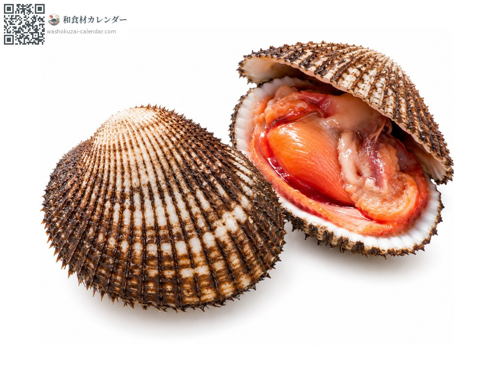
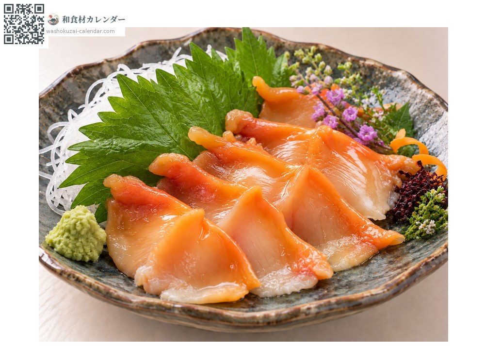
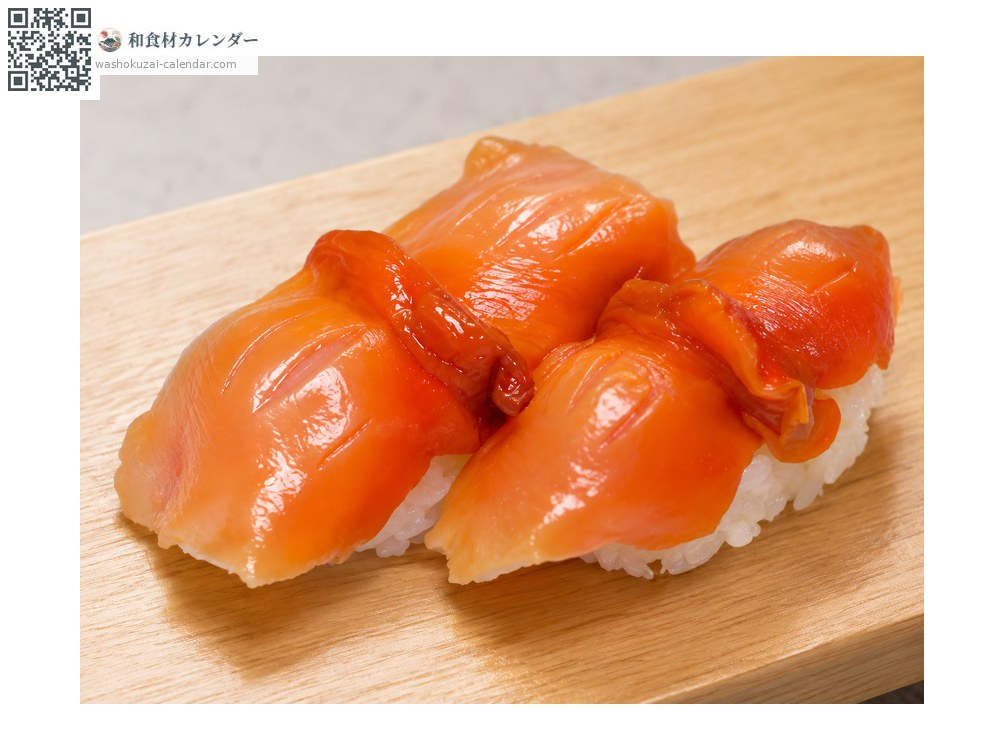
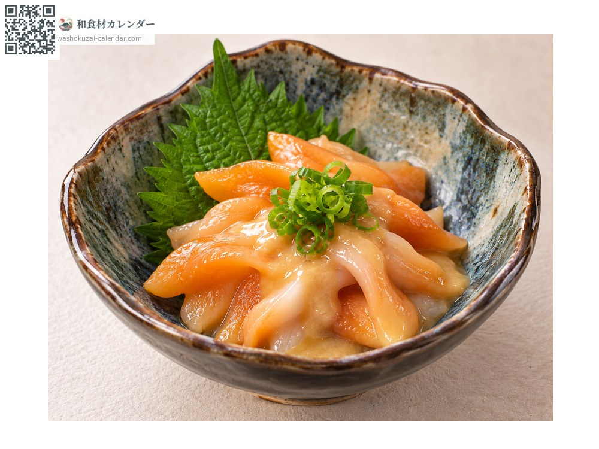
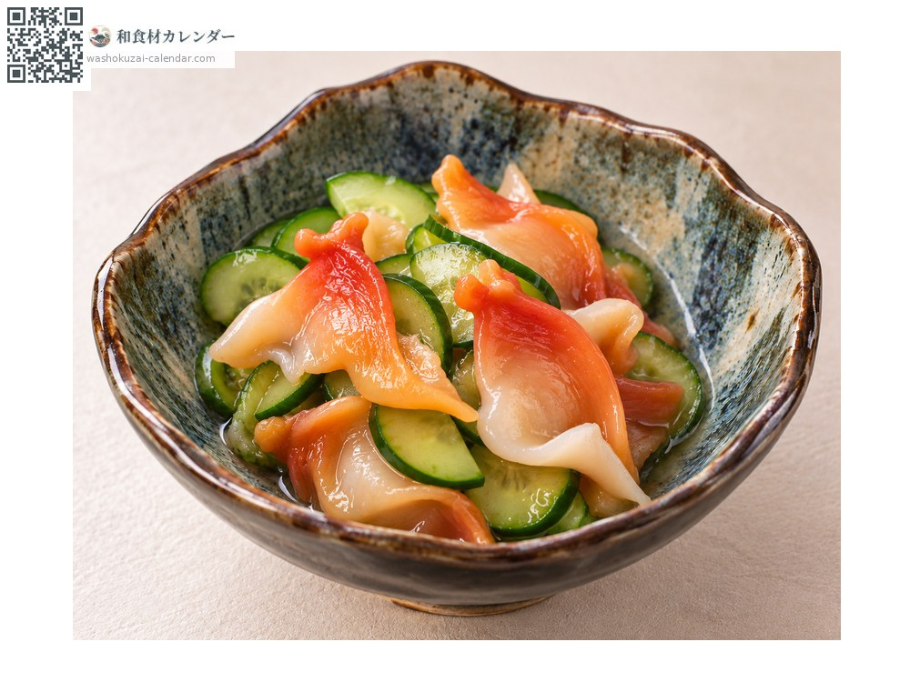

Blood clam
赤貝 あかがい akagai
Also known asakagai
At its best in Jan, Feb, Nov, Dec

When it is at its best
In seasonAvailable
How to cook

Sashimi
Scored and struck against the board so the flesh curls; a crisp, firm bite.

Sushi
Prized as a nigiri topping, with the mantle served separately.

Nuta
The mantle dressed with vinegared miso, where its texture comes into its own.

Sunomono
Paired with cucumber for a fresh finish.
How to choose
A thick shell with around forty-two radiating ribs, and flesh of a vivid red.
Storage
Refrigerate in the shell. Shucked meat should be used the same day.
Main areas
Good to know
Its blood contains haemoglobin, which turns the flesh red and gives the clam its name, a rare trait among shellfish. The ark shell also circulates as akagai but is a different species, told apart by the ribs: about forty-two against about thirty-two.
At their best around the same time
 Chub mackerel
Chub mackerel Japanese amberjack
Japanese amberjack Pacific bluefin tuna
Pacific bluefin tuna Swordfish and marlin
Swordfish and marlin Yellowback seabream
Yellowback seabream Golden threadfin bream
Golden threadfin bream Spottedtail morwong
Spottedtail morwong Largescale blackfish
Largescale blackfish